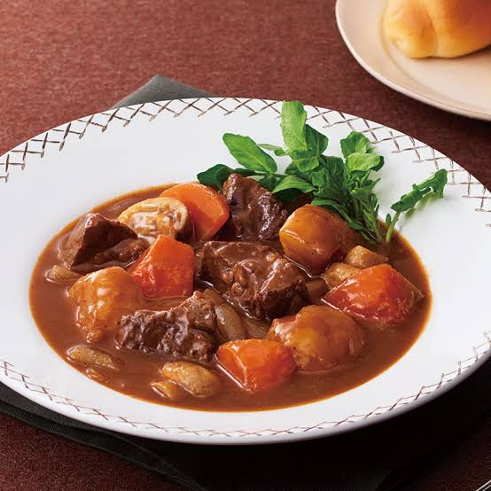
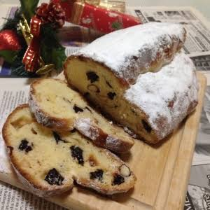
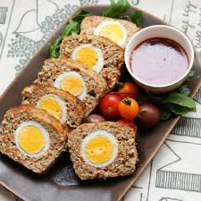
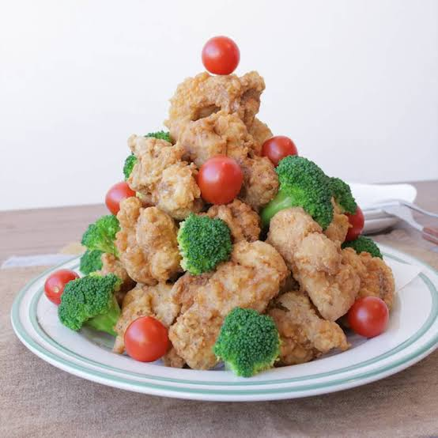
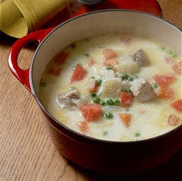
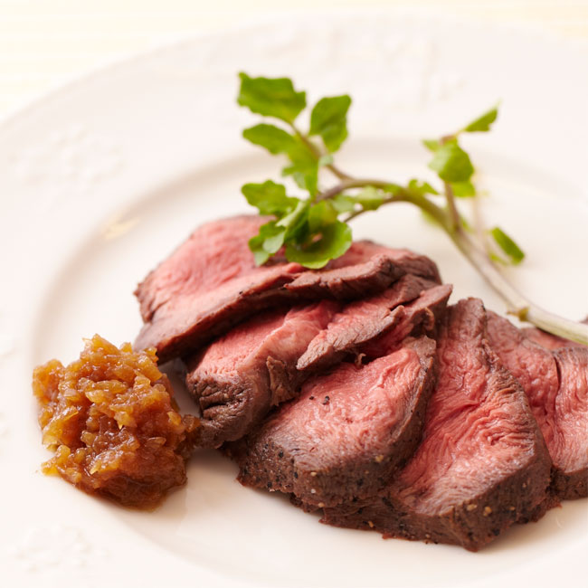
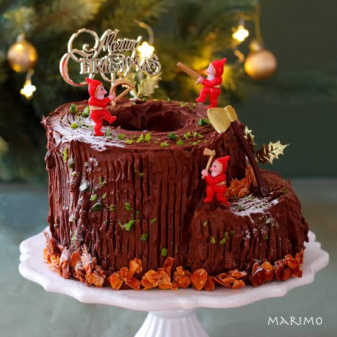
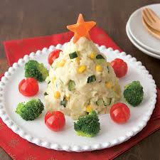
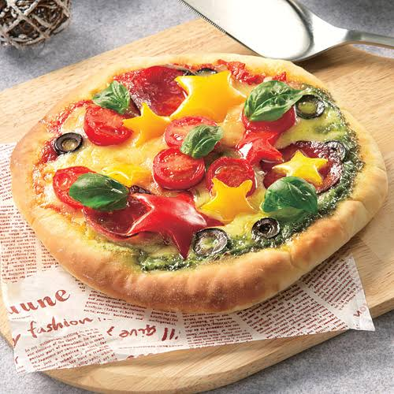

ビーフシチュー
材料：牛肉 玉ねぎ 人参 じゃがいも マッシュルーム
赤ワイン 小麦粉 コンソメ 塩・こしょう 油
材料費：1500円
制作時間：3時間

シュトーレン
材料：強力粉 卵 牛乳 バター ドライフルーツとドライナッツのラム酒漬け
材料費：1300円
制作時間：90分

ミートローフ
材料：：合い挽き肉 玉ねぎ 卵 豆腐 チーズ
材料費：1000円
制作時間：1時間

フライドチキン
材料：むね肉 しょうが にんにく マヨネーズ 小麦粉
材料費：500円
制作時間：20分

クリームシチュー
材料：鶏もも肉 バター チーズ 牛乳 白ワイン
材料費：500円
制作時間：1時間

ローストビーフ
材料：牛もも肉 キウイ 玉ねぎ バター
材料費：1500円
カロリー：90分
ホワイトソース マカロニグラタン
材料：エビ マカロニ バター 牛乳
材料費：1000円
制作時間：40分

ブッシュドノエル
材料：卵 ココアパウダー バター 牛乳
材料費：500円
制作時間：1時間

ポテトサラダ
材料：じゃがいも にんじん きゅうり マヨネーズ
材料費：200円
制作時間：30分

ピザ
材料：強力粉 ソーセージ ピーマン チーズ
材料費：100円
制作時間：1時間